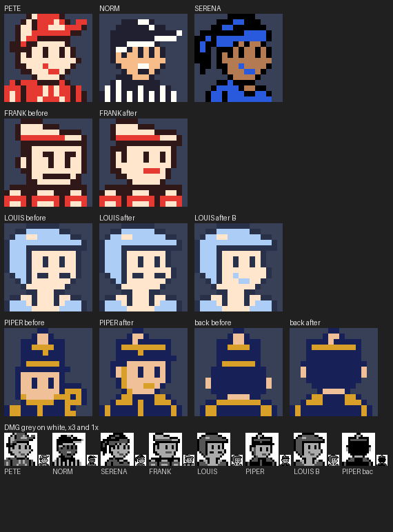

Every question waiting on your answer, with its pictures. Answered questions come off this list. Reply in chat with the number, e.g. "Q12: shared".
2 open · updated 2026-10-29
Q45
Stadium heads: FRANK, LOUIS, PIPER
LOUIS: A (eye black, no mouth) or B (smile)? FRANK and PIPER: keep, or what to change?
Faces built like PETE, NORM and SERENA: narrow face, ear, 2 px eyes, rounded chin.
FRANK keeps a flat mouth so he reads stern next to PETE.
PIPER: band uniform, no bugle, shorter shako, gold chin strap. Back redrawn to match.
Color only.

Q46
GUS's skin colour slot
Move GUS's skin to the same colour slot as everyone else, Color only? Yes / no.
GUS has his skin in the middle colour and his beard in the light one; everyone else has skin in the light one. That is why other palettes give him a green or red face.
Swapped, he looks exactly as now in HANK's palette, and turns white with a coloured beard in the others.
HANK's palette is the one that turns others Black; GUS would share it with HANK instead of EMMA's.
Color only: the DMG GUS stays as he is. No tile or palette cost.